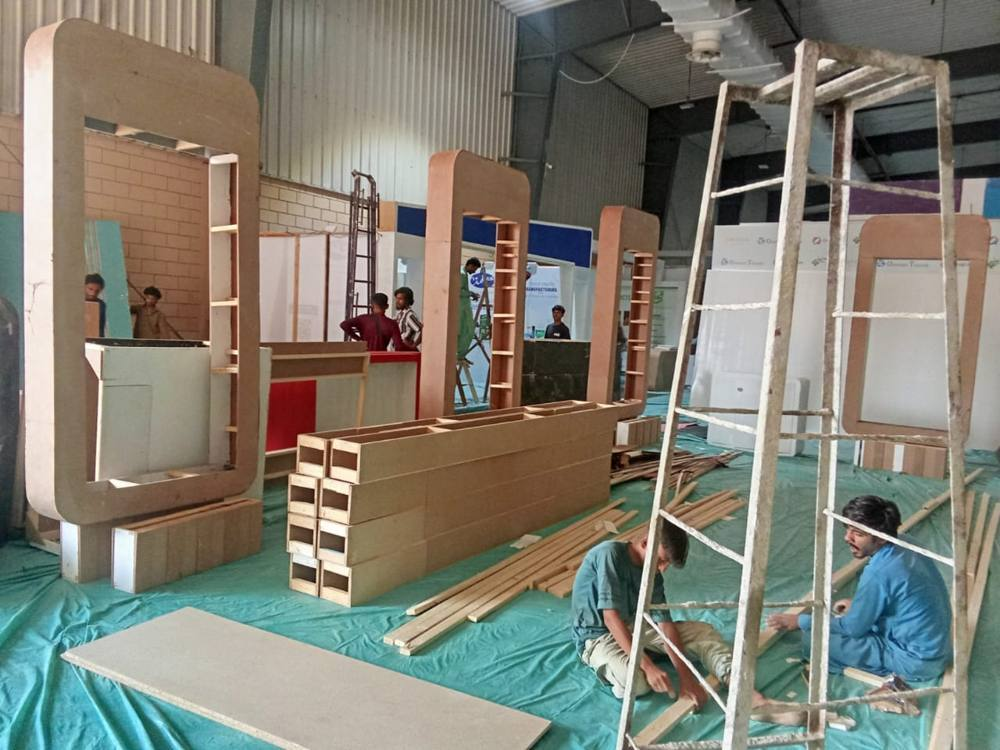
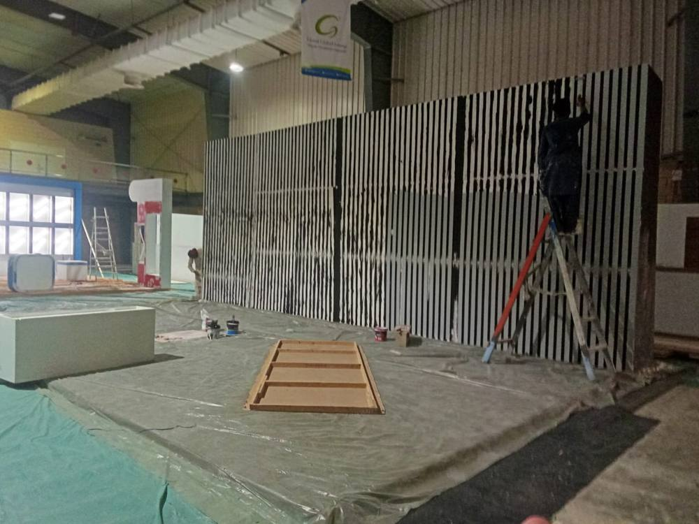
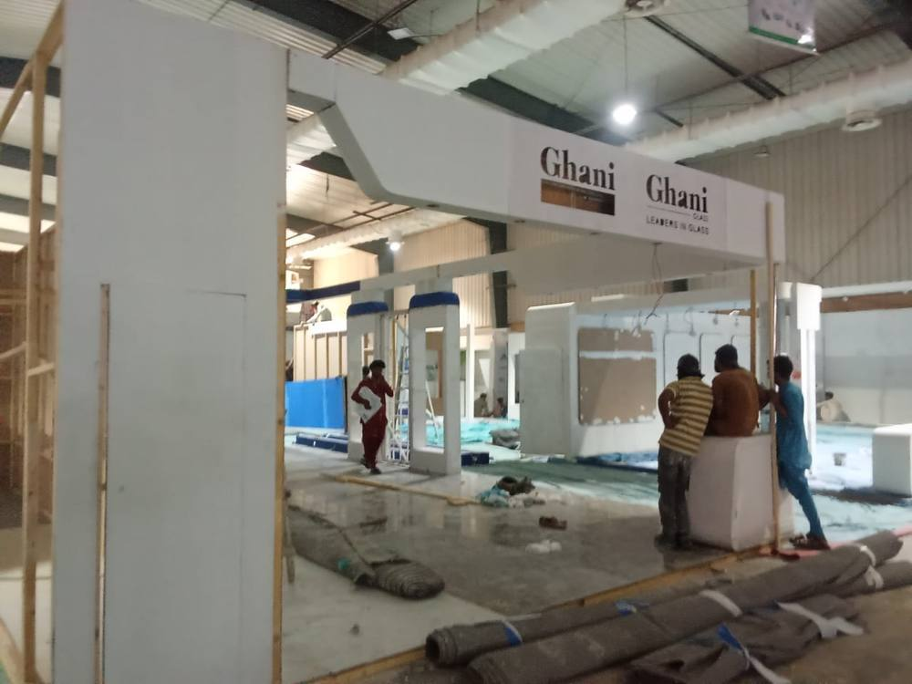

Which Materials Should an Exhibition Stall Be Made Of?
The material list in a quote decides how your stall looks on day one and how it looks on day three. This guide covers what we build with, where each material earns its place and what to ask for in writing.
Exhibition stand construction materials at a glance
Nobody builds a stall from one material. Materials for exhibition stands usually mix three or four, each doing the job it is best at.
| Material | Best used for | Watch out for |
|---|---|---|
| MDF | Shaped, paintable walls, counters, fascias and feature walls | Swells at unsealed edges in damp air, and is heavy to move across a city |
| Plywood | Load-bearing frames, raised platforms and counters people lean on | Usually costs more than MDF and still needs a proper finish |
| Aluminium | Light, reusable frames and Octanorm-style systems | Fewer custom shapes than wood |
| Acrylic | Clean displays, shelves and lit logos | Expands in heat and scratches easily |
| Laminate and paint | Durable colour on counters and walls | Joins and edges show if the job is rushed |
| Fabric | Seamless, lightweight printed graphics | Tension shifts with temperature |
| Vinyl and printed panels | Wall graphics, floor graphics and lettering | Lifts if moisture gets under a poorly laminated print |
| LED lighting | Backlit panels, fascia spotlights and screens | Needs ventilation and a power plan |
Wood fabrication for exhibition stands: MDF or plywood?
Most custom stalls start as wood. MDF takes paint and routing well (we cut ours on CNC machines in our own workshops), so round-cornered portals, curved counters and slatted walls are practical to make.
Plywood is the safer pick when a part has to carry weight: a raised platform, the staircase of a double-deck booth, a counter that visitors and staff will lean on.
Wood has one real enemy, and it is moisture. Every face and every cut edge should be sealed before paint or laminate goes on. An unsealed edge is where a stall in a humid city starts to swell and lift.

The photo shows how it looks in practice: the structure is cut and assembled from boards, then finished on site. That is why stall fabrication is mostly decisions about what each board has to do.
Aluminium frames for a stall you will use again
If you exhibit several times a year, a light aluminium stall frame with panels pays you back. It goes up faster, packs flatter and can change size or graphics between shows. The trade-off is shape: you get straight lines and standard panels, and the custom touches are added on top.
That is the Octanorm approach. A hybrid keeps the modular frame and adds one custom element, such as a counter or a feature wall. Our custom vs modular comparison works through the decision, and our Octanorm stall section shows starting prices.
Surfaces, lights and graphics
These are the materials visitors actually see and touch.
- Paint: the cheapest way to change a colour. It needs time to cure, and more of it when the air is damp.
- Laminate: colour that survives hands, bags and boxes. It is the usual choice for counter tops.
- Acrylic: good for lit lettering and clean display shelves. Leave a little room for it to expand in hot halls.
- Fabric and vinyl: printed graphics. Fabric gives a seamless wall; vinyl suits lettering and floor graphics. See branding and printing for which graphic suits which job.
- LED: keep drivers ventilated and budget the power load before the show, because screens and lights add both heat and electrical load.

Choose stall materials by city
The same drawing needs different materials depending on where the show is.
- Karachi: seal every panel face and edge, use corrosion-resistant fixings and moisture-resistant graphic laminates. See our Karachi stall designer and fabricator page.
- Lahore: leave expansion gaps for acrylic, ventilate LED drivers and expect adhesives to be tested by summer heat. See Lahore stall designers and fabricators.
- Islamabad: matte finishes, because glossy panels throw glare into cameras. See Islamabad booth designer and fabricator.
- Multan: washable, lighter or textured finishes that forgive dust. See Multan stall designer.
Choose materials by how often the stall will be used
| Your situation | Usual structure | Why |
|---|---|---|
| One show, custom look | MDF or plywood frame, painted or laminated | The cheapest route to a shape nobody else has |
| Several shows, similar size | Aluminium frame with panels | Reusable, quicker to build, easier to store |
| Several shows, one signature feature | Hybrid: modular frame plus a custom counter or wall | Reuse the frame, refresh the part visitors remember |
| A show in another city | Lighter parts, numbered and packed in build order | Weight and handling add up. Our starting prices include transport to other cities |
Material choice is one of the levers behind your quote. The exhibition stall cost guide shows how the others compare.
What to ask for in writing
A quote that says "stall structure" tells you nothing. Ask for these to be named:
- The material of the structure and the panel faces
- How edges are sealed and what the fixings are
- The counter top finish
- The graphic type: vinyl, fabric, backlit or 3D lettering
- The lighting and the power load it needs
- Whether the stall is test-assembled before it ships, and who builds it
Our guide to choosing an exhibition stall contractor has ten more questions, and in-house vs outsourced fabrication explains why the last one matters.

Common questions
What is the best material for an exhibition stall?
There is no single best material. MDF or plywood suits custom shapes, aluminium suits stalls you reuse, acrylic and LED suit lit details, and printed fabric or vinyl carries the branding. The right mix depends on reuse, travel and the climate of the host city.
Is MDF or plywood better for exhibition stands?
MDF is easier to shape and paint, so it suits fascias, curved counters and feature walls. Plywood is the better choice for parts that carry weight, such as platforms and staircases. Both need sealed faces and edges in humid cities.
Can an aluminium stall be reused?
Yes. Aluminium frames and panels can be reconfigured and used across shows, which is why modular and Octanorm-style stalls suit repeat exhibitors.
Which materials suit Karachi humidity?
Sealed panels, corrosion-resistant fixings and moisture-resistant graphic laminates generally perform best, with extra drying time scheduled before the hall opens.
Do you do wood fabrication for exhibition stands?
Yes. We fabricate wooden frames, counters, fascias and feature walls in our own workshops in Karachi, Lahore and Islamabad, alongside aluminium, acrylic, laminate, fabric and LED work.
Does the material change the price of a stall?
Yes. Material, finish and how elaborate the features are all move the price. Our starting prices begin at PKR 13,000 for a basic 10x10 package, and your quote names the materials used.
Related reading
- exhibition stall fabrication in Pakistan: see how a stall is built, from frame to finish.
- whether custom or modular suits you: cost over several shows, lead time and reuse.
- exhibition booth branding and printing options: backlit, fabric, vinyl and floor graphics.
- how much an exhibition stall costs in Pakistan: starting prices for every stall type and what moves them.
- exhibition stall types, sizes and prices: from kiosks to double-deck booths.
- custom kiosk design and fabrication: mall, retail, sampling and exhibition kiosks.